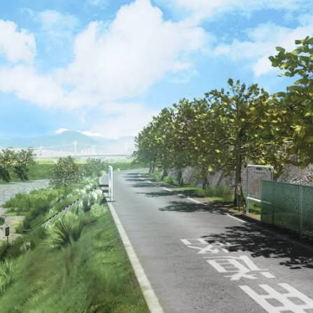

Shiroku Store
De día vende artículos cotidianos, medicinas y semillas. De noche... es un lugar muy diferente (Pub Shiroku).
HorariosEl antiguo corazón de Inaba. Aunque la llegada de Junes afectó las ventas, sigue siendo un lugar lleno de tradición y dueños pintorescos.
De día vende artículos cotidianos, medicinas y semillas. De noche... es un lugar muy diferente (Pub Shiroku).
HorariosEl mejor tofu de la región, administrado por la familia Kujikawa. Probá su especialidad de ganmodoki.
Ver menú¿Necesitás algo afilado? Daidara forja el mejor metal de Inaba. Sus creaciones son verdaderas obras de arte.
Catálogo
La llanura de inundación del río Samegawa es el lugar perfecto para pescar, pasear al perro o simplemente pensar mientras mirás el atardecer.